El domingo 6 de marzo se disputó el Torneo Día de la Mujer HSM donde unas 30 golfistas
disfrutaron de una ronda a 9 hoyos modalidad scramble en un día de excelentes
condiciones climáticas.
Como siempre, se realizó con gran camaradería y compartiendo un grato momento luego de
finalizada la ronda.
Felicitaciones a todas por su participación y en especial a las ganadoras y a quienes
completaron el podio.
Aprovechamos para desearles un Feliz Día de la Mujer
A continuación los resultados
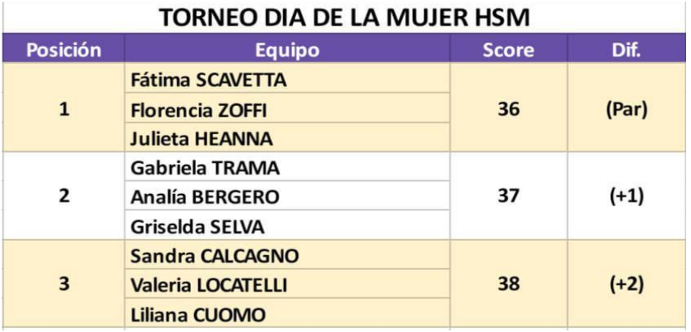
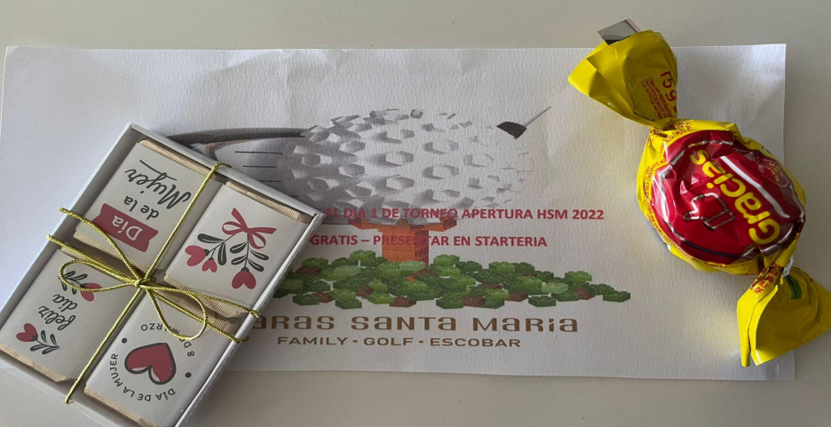
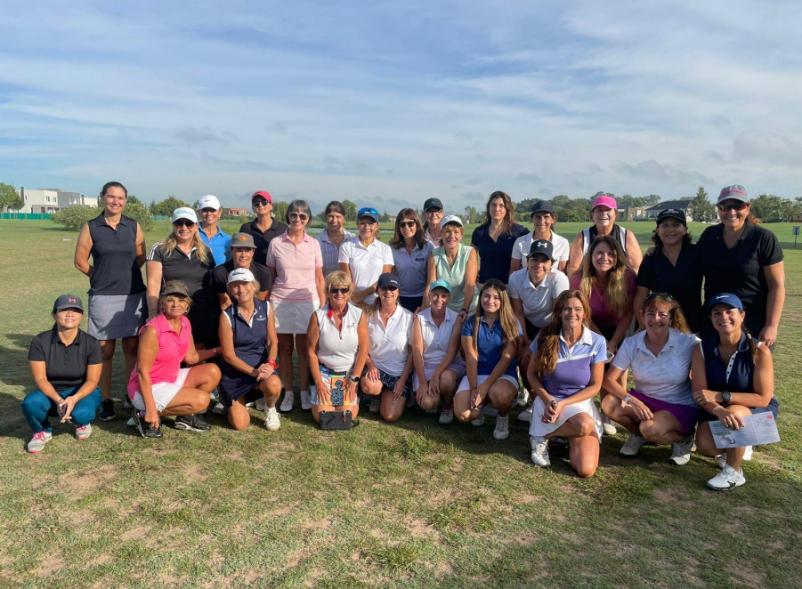
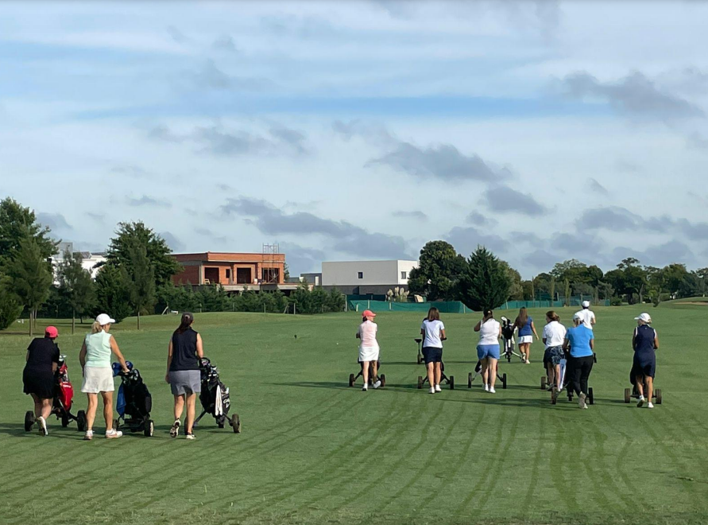
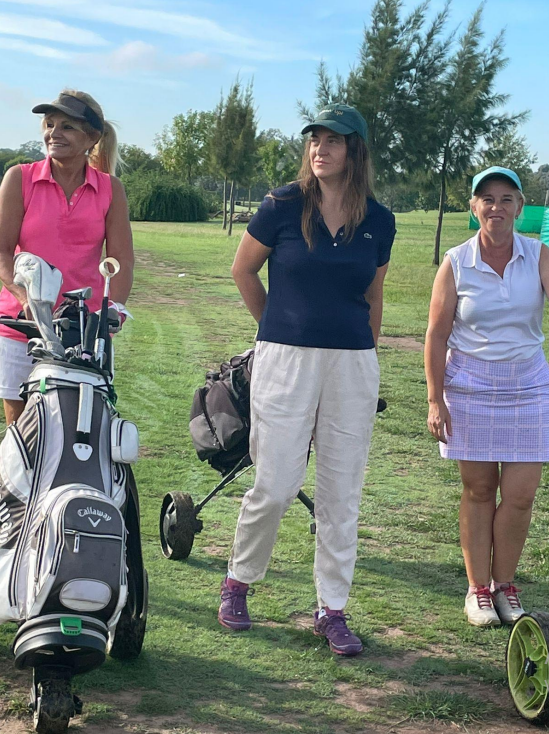
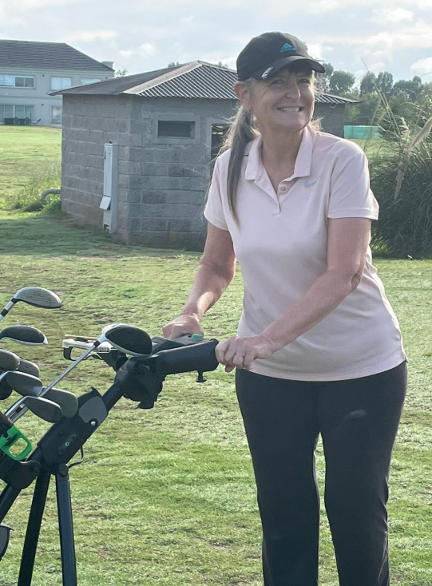
Durante este 2021 hemos tenido un crecimiento muy grande en el golf de HSM, luego del
confinamiento del 2020 hemos podido retomar el normal calendario de torneos del club,
participación en los Circuitos Intercountries, Torneos de Menores y destacadas participaciones
individuales en Torneos de la AAG.
CAMPEONES LOCALES
Finalizada la temporada 2021 con gran cantidad de torneos entre ellos el Torneo de Verano,
Apertura, Gran Premio HSM, Clasificaciones al Campeonato del Club Twosome y Single,
Ranking Anual, Torneo Clausura y muchos más, queremos destacar a los ganadores de los
principales torneos del club:
• Campeonato del Club de Damas: Fátima Scavetta, con 15 años es la campeona más joven
de HSM, derrotó en la final a Elena Durnhofer.
• Campeonato del Club de Caballeros: Juan Manuel Aldana vs Ignacio Bidart (por disputarse)
ambos en búsqueda de su primer título individual.
• Campeonato del Club Twosome: Carlos Lovi - Mariano Alvarez Luchía también lograron su
primer titulo por parejas.
• Copa Master de Bajo Handicap: resultó campeón Kim Tae Miguel versus Sergio Sar.
• Copa Master de Alto Handicap: se consagró Ariel Sragowicz versus Juan Carlos Clerici.
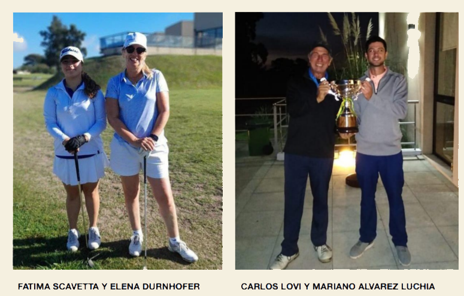
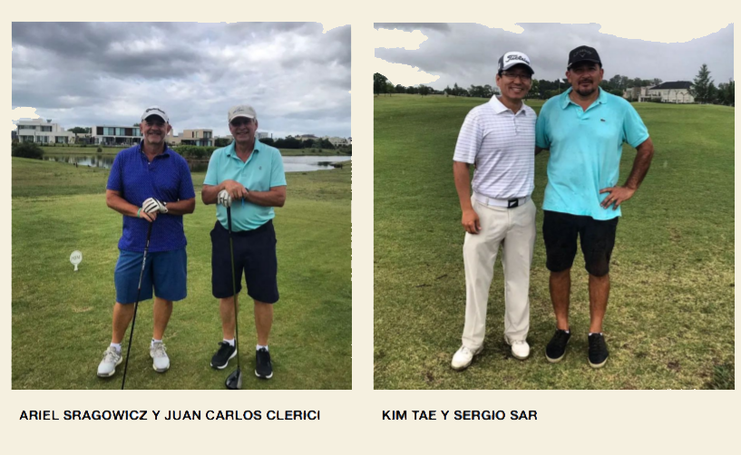
CAMPEONES LOCALES POR EQUIPOS
En una nueva edición de los Torneos Interbarriales:
• Copa Haras: Las Lomas consiguió su tercer título (2016 y 2018) en este torneo venciendo en
la final a Molino Norte. El equipo 2021 estuvo integrado por Marcelo Armesto, Roberto
Bocchicchio, Sandra Calcagno, Francisco Curia, Cesar de Armero, Lisandro Domingo, Jorge
De Luca, Elena Durnhofer, Milton Cavero, Enzo Taíbi, Enrique Vallejo y su capitana Silvana
Pedrón.
• Copa Ranking de Barrios: en la segunda edición de este certamen volvió a consagrarse El
Atardecer defendiendo el título obtenido en 2019 ya que la edición 2020 no se disputó. El
equipo campeón estuvo conformado por Miguel Alfonsín, Matías Bertol, Alexis Buchuk,
Manuel Castruccio, Ana Damián, Carlos Lovi, Gabriel Mirave, Carlos Peñaloza, Francisco
Pozzoni, Francisco Puggioli, Ariel Sragowicz y su capitán Juan Manuel Felgueras.
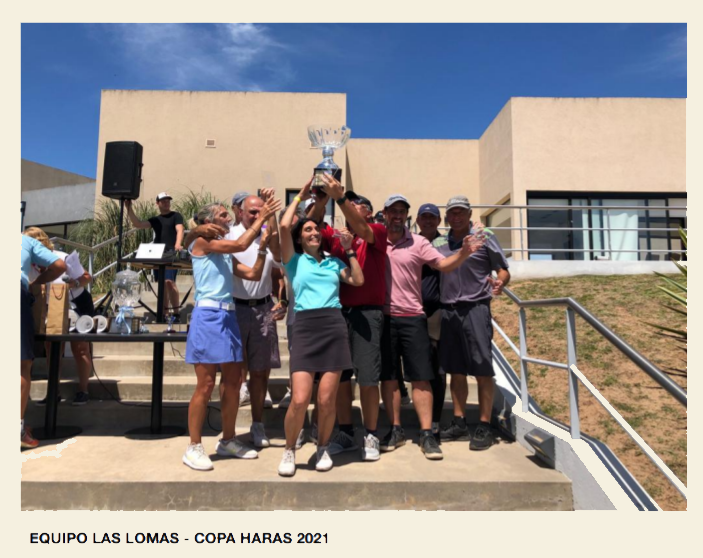 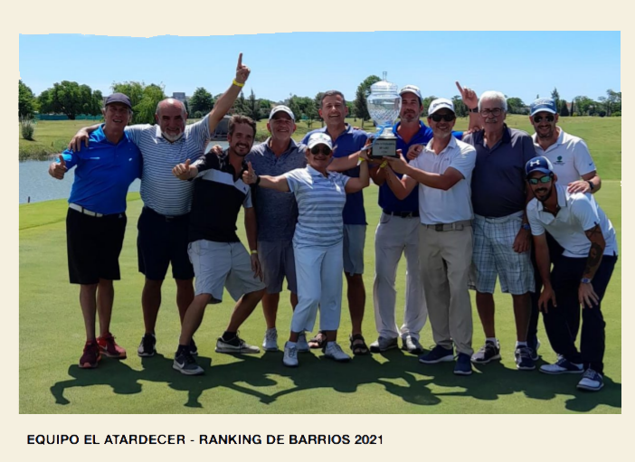
INTERCOUNTRIES
En cuanto los Circuitos de Intercountries se destacó el equipo de damas integrado por
Mercedes Aldana, Celeste Boueke, Elena Durnhofer, Fátima Scavetta, Gabriela Trama, Sandra
Calcagno, Julia Simkin y su capitana Karina Zimbimbakis consagrándose campeonas de su zona
y subcampeonas interzonales del Circuito de Golf de Clubes de Campo Damas 2021 disputado
por 11 equipos.
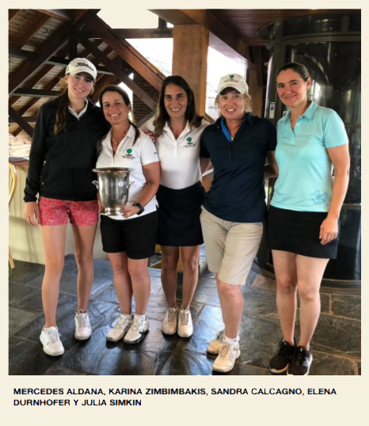
El equipo de Caballeros Libres en canchas de 18 hoyos capitaneado por Enzo Taíbi consiguió un
gran Subcampeonato del Circuito integrado por 11 clubes y con chances hasta la última de
fecha de consagrarse campeón.
El equipo de Caballeros Seniors en canchas de 18 hoyos, capitán Carlos De Gonneville, finalizó
7mo en un circuito integrado por 16 equipos.
En cuanto a los Circuitos en Canchas de 9 hoyos donde aún tiene participación HSM, el equipo
de Libres, capitán Juan Manuel Felgueras, finalizó en el 9no puesto sobre 12 clubes
participantes y el equipo de Seniors, su capitán es Julio Pérez, finalizó en la 5ta posición
sobre 11 equipos.
TORNEOS DE MENORES
Mechi Aldana se consagró Ganadora del Ranking de Damas Menores de 18 años del Metro
Junior Tour donde también se destacó la participación de Fátima Scavetta finalizando en el
7mo puesto.
Por su parte Juanse Valdéz finalizó subcampeón del Ranking de Caballeros Menores de 13
años.
Entre los más pequeños y en su primer año de competencias Cipriano Prieto se coronó
Campeón del Ranking de Caballeros categoría Birdies!!
También participaron en diferentes categorías y con buenos resultados Nicolas Alvarez Otero,
Emilio Saracco, Mateo Sragowicz, Bautista Mendizabal, Thomas Ponce, Galo Bertol y Gonzalo
Herdegen mostrando el futuro del golf de nuestro club.
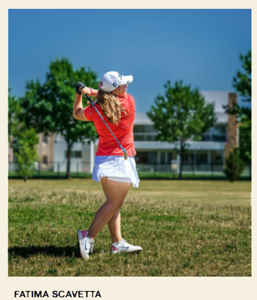
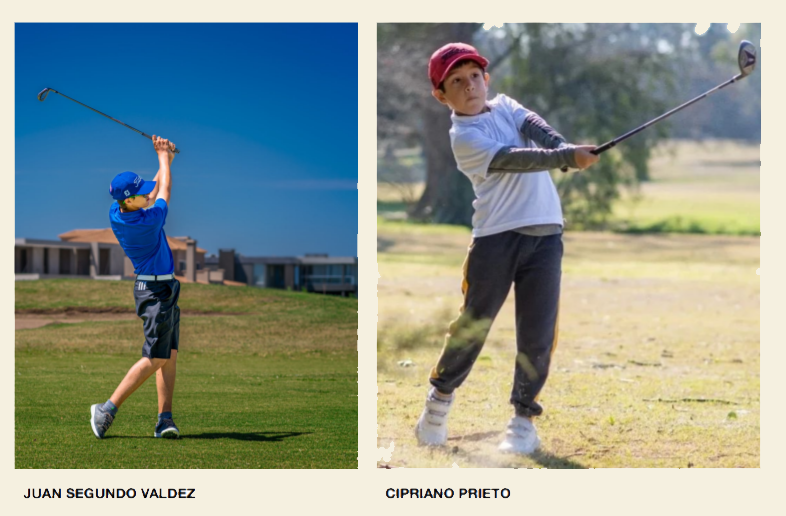
DESTACADOS INDIVIDUALES
Mechi Aldana tuvo un gran año en torneos AAG que comenzó allá por febrero con el 3er Puesto
en el XXVIII Abierto El Federal en el Jockey Club de Córdoba; en marzo junto a Juanma Aldana
obtuvieron el 3er Puesto por equipos en el Campeonato Nacional por Parejas- Mixed disputado
en el Golf Club Argentino. En septiembre obtuvo 3ros Puestos en el Torneo Nacional de
Menores disputado en Ascochinga Golf Club y en el tradicional Abierto del Jockey Club de
Rosario.
En noviembre último Mechi disputó la Final de los Juegos Bonaerenses en Sierra de los Padres
Golf Club donde representando al Municipio de Escobar ganó la Medalla Dorada en Damas.
Para finalizar el año disputó el 116 Campeonato Argentino de Aficionadas logrando clasificar
entre las 8 mejores jugadoras para los matches definitorios cayendo en cuartos de final versus
María Cabanillas quien luego se coronara campeona del certamen y es una de las jugadoras
del año a nivel nacional.
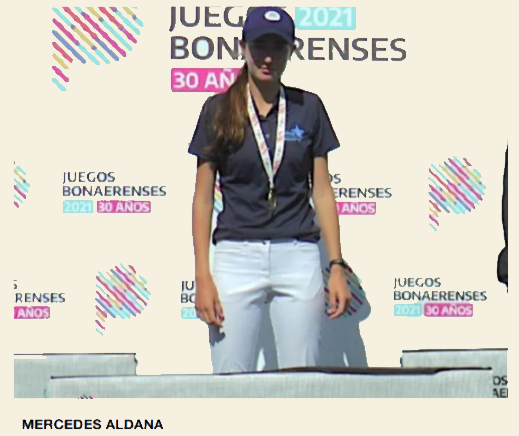
Juanma Aldana por su parte disputó su primer año como aficionado mayor ya que debido a la
pandemia no pudo disputar torneos en el 2020. Durante este año participo en el Abierto del
Jockey Club de Rosario, la Copa Juan Carlos Tailhade en Los Lagartos Country Club, el Gran
Premio Dr. Luis Gestoso en Olivos Golf Club y el Abierto de la Ciudad de Rosario donde en
Mitre de Pérez Golf Club Juanma se consagró campeón lo que le permitió ingresar al World
Amateur Golf Ranking (WAGR)
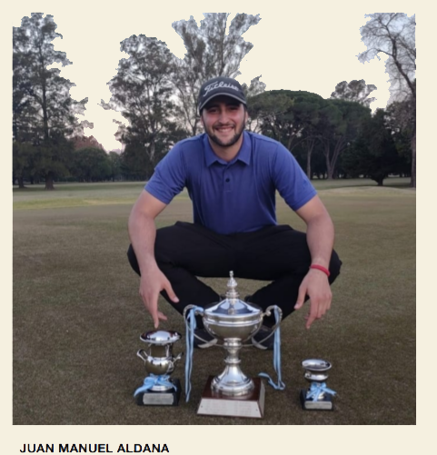